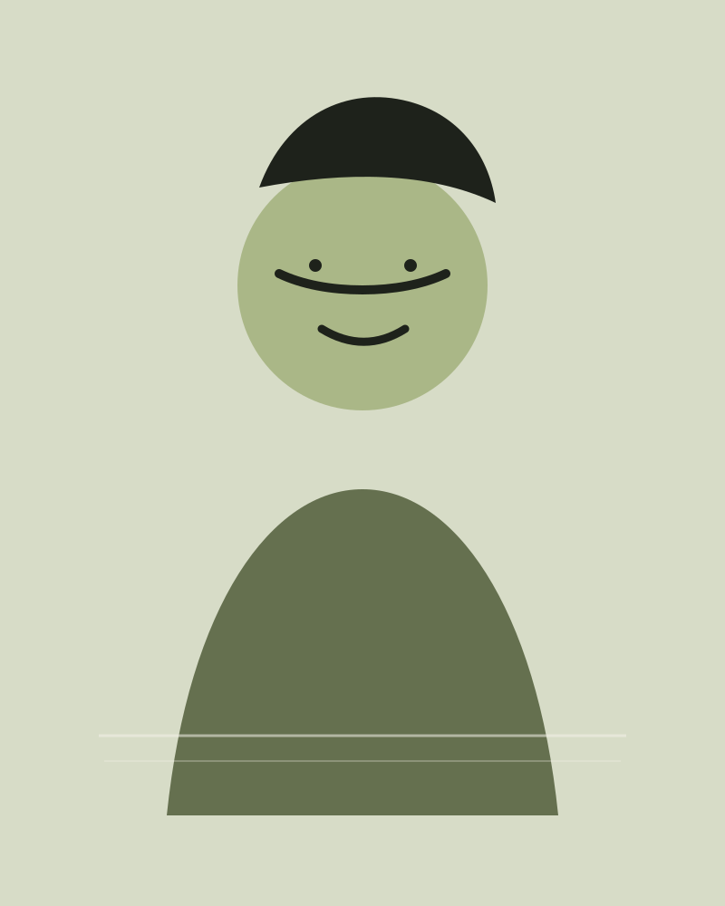

Fundamentals
Stance, footwork, coordination, blade control and distance.
The person behind the mask
Coaching that respects the tradition of fencing without making the sport feel intimidating.

Coach Omar NAHI
Omar's coaching philosophy is simple: good fencing starts with a clear understanding of distance, timing and intention. Lessons are structured, but never robotic. Every exercise connects to a real situation on the piste.
He works with complete beginners, recreational fencers, young athletes and competitors preparing for national or international events.
“The goal is not to copy your coach. The goal is to understand the game well enough to find your own fencing.”
What we work on
Stance, footwork, coordination, blade control and distance.
Reading opponents, building actions and understanding priority.
Match plans, warm-up routines, video review and pressure management.
Technique, discipline and confidence in an age-appropriate framework.